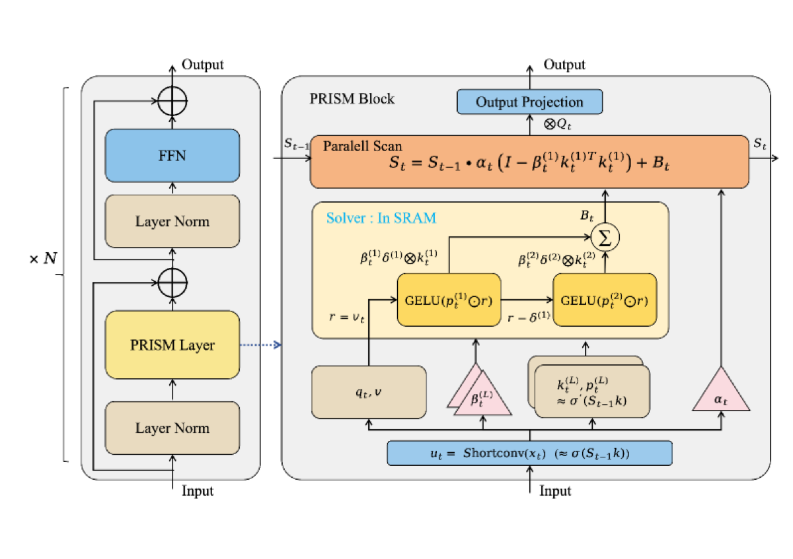

Why it matters왜 중요한가
The real frontier isn't "linear vs. attention" — it's "how deep an optimizer can you run while staying parallel."
진짜 격전지는 "선형 대 어텐션"이 아니라, "병렬을 유지하면서 얼마나 깊은 옵티마이저를 돌릴 수 있는가"다.
Linear attention, SSMs and the delta-rule all share one ceiling: each new token is written into the state with a single Rank-1 outer product — one gradient step on a linear objective. That cannot do iterative error correction. TTT removes the ceiling by running multi-step gradient descent at inference, but the gradient ∇L depends on St−1, forcing a serial chain that kills the throughput advantage. PRISM's bet is that you don't need the exact state-dependent trajectory — you only need its structure (Rank-L accumulation + non-linear shaping), and that structure can be distilled into a static, input-only policy that a parallel prefix scan can still process.
선형 어텐션, SSM, 델타룰은 한 가지 천장을 공유한다: 새 토큰을 단일 Rank-1 외적(선형 목적함수에 대한 1회 그래디언트 스텝)으로만 상태에 쓴다. 반복적 오차 보정이 불가능하다. TTT는 추론 시 다단계 경사하강으로 이 천장을 없애지만, 그래디언트 ∇L이 St−1에 의존해 직렬 사슬을 강제하고 처리량 이점을 무너뜨린다. PRISM의 베팅은 정확한 상태 의존 궤적이 아니라 그 구조(Rank-L 누적 + 비선형 shaping)만 필요하며, 그 구조를 입력만으로 결정되는 정적 정책으로 증류하면 병렬 prefix scan이 여전히 처리할 수 있다는 것이다.

By the numbers핵심 숫자
optimization (TTT)명시적 최적화(TTT)
대비 처리량
(best of all linear models)PRISM 평균 순위
(전 선형 모델 중 1위)
(vs. Rank-1 baseline)주입 랭크
(Rank-1 대비)
2K→16K (TTT: 0.34K)PRISM tok/s, 2K→16K
안정 (TTT: 0.34K)
at 16K (PRISM: flat)Transformer++ 16K
둔화 (PRISM: 평탄)
4 rec. benchmarks모델 크기 · H20 1장
추천 벤치 4종
Results — best linear model, Transformer-grade quality결과 — 최고 선형 모델, 트랜스포머급 품질
| Model | Books AUC | Movies AUC | Movies NDCG@200 | Mean Rank |
|---|---|---|---|---|
| GLA | 0.8752 | 0.7478 | 0.0222 | 9.38 |
| Mamba-2 | 0.8872 | 0.7713 | 0.0276 | 5.00 |
| Gated DeltaNet | 0.8844 | 0.7504 | 0.0253 | 5.12 |
| TTT | 0.8871 | 0.7591 | 0.0256 | 5.25 |
| TITANS | 0.8869 | 0.7652 | 0.0278 | 3.62 |
| PRISM | 0.8888 | 0.7727 | 0.0289 | 2.62 |
| SASRec (Transformer) | 0.8910 | 0.7677 | 0.0244 | – |
In one diagram한 장의 그림
The two ideas that make it work작동을 가능케 한 두 아이디어
Write-Forget Decoupling
A spectral perturbation analysis shows errors in the forgetting operator At accumulate only at O(ln T) (O(1) on average), while errors in the injection Bt accumulate at O(T). So PRISM cheaply linearizes At (a Rank-1 I − βkk⊤ decay) and spends all capacity on a high-rank, non-linear Bt.
스펙트럼 섭동 분석 결과 forgetting 연산자 At의 오차는 O(ln T)(평균 O(1))로만 쌓이는 반면, 주입 Bt의 오차는 O(T)로 쌓인다. 그래서 PRISM은 At를 값싸게 선형화(Rank-1 I − βkk⊤ 감쇠)하고 모든 표현력을 high-rank·비선형 Bt에 쏟는다.
Input-Anchored Loop Unrolling
Replace the serial dependency on St−1 with a ShortConv proxy ut. An unrolled loop forms a Newton-like step δ(l)=GELU(p(l)⊙r(l)), subtracts it (r(l+1)=r(l)−δ(l)), and accumulates orthogonal Rank-1 terms into Bt = Σ β(l)(δ(l)⊗k(l)).
St−1에 대한 직렬 의존을 ShortConv 프록시 ut로 대체한다. unrolled loop가 뉴턴 스텝 δ(l)=GELU(p(l)⊙r(l))을 만들고 이를 빼며(r(l+1)=r(l)−δ(l)) 직교 Rank-1 항을 Bt = Σ β(l)(δ(l)⊗k(l))로 누적한다.
How it works어떻게 작동하나
- Anchor the state interaction상태 상호작용 anchorA short convolution over local input yields ut ≈ St−1kt, giving state-independent access to the key interaction (error decays exponentially with the memory window).로컬 입력에 대한 short convolution이 ut ≈ St−1kt를 내어, key 상호작용에 상태 독립적으로 접근(오차는 메모리 윈도우에 따라 지수적으로 감소).
- Seed and refine the residual잔차 초기화·정제Initialize r(1)=vt−ut, then iterate L times: gate by a learned gain predictor p (a proxy for σ′), GELU-shape it, and subtract — each pass captures complementary error.r(1)=vt−ut로 초기화 후 L회 반복: 학습된 gain predictor p(σ′의 프록시)로 게이팅, GELU shaping, 뺄셈 — 매 회 보완적 오차를 포착.
- Accumulate Rank-L injectionRank-L 주입 누적Sum the L orthogonal rank-1 components, each scaled by a confidence gate β(l)=Wβut, into the high-rank matrix Bt.각각 신뢰도 게이트 β(l)=Wβut로 스케일된 L개의 직교 rank-1 성분을 high-rank 행렬 Bt로 합산.
- Inject into a decoupled recurrence분리된 recurrence에 주입Update St = αtSt−1(I − β(1)k(1)⊗k(1)) + Bt. Because At and Bt are both input-only, a parallel scan computes the whole sequence in O(N).St = αtSt−1(I − β(1)k(1)⊗k(1)) + Bt로 갱신. At·Bt 모두 입력만의 함수라 병렬 스캔이 전체 시퀀스를 O(N)에 계산.
What to take away그래서, 가져갈 것
You can have depth and parallelism. Amortizing the solver's structure (not its exact trajectory) gets explicit-solver quality at 174× the throughput of TTT.
깊이와 병렬성을 동시에. 솔버의 구조(정확한 궤적이 아니라)만 상각하면 명시적 솔버 품질을 TTT 대비 174× 처리량으로 얻는다.
Rank-1 is the real bottleneck. The ablation's biggest drop comes from collapsing L→1 (AUC 0.7134→0.6805) — solver depth, not non-linearity alone, is what matters.
진짜 병목은 Rank-1. 어블레이션 최대 하락이 L→1 축소에서 발생(AUC 0.7134→0.6805) — 비선형성보다 솔버 깊이가 핵심.
Decouple where errors are cheap. The At O(ln T) vs Bt O(T) asymmetry is a reusable design principle: linearize the forget gate, spend rank on the write.
오차가 싼 곳을 분리하라. At O(ln T) 대 Bt O(T) 비대칭은 재사용 가능한 설계 원칙: forget은 선형화, write에 랭크를 쓴다.
It's a drop-in linear layer. Built on Flash-Linear-Attention operators, PRISM sits in the 55–65K tok/s band with GLA/Mamba2/GDeltaNet — no exotic kernel.
그대로 끼우는 선형 레이어. Flash-Linear-Attention 연산자 위에 구현, GLA/Mamba2/GDeltaNet과 같은 55–65K tok/s 대역 — 특수 커널 불필요.